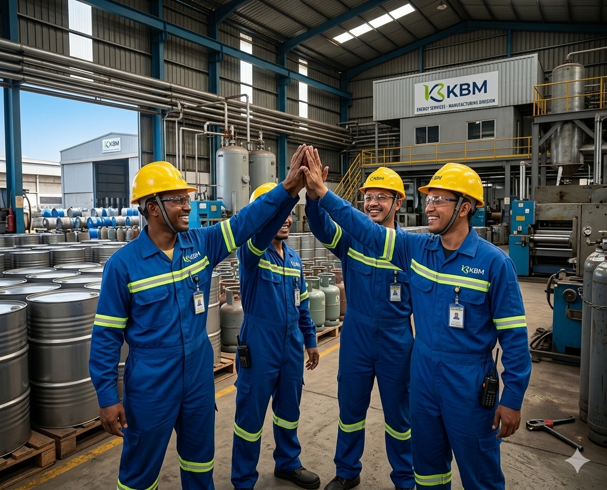

PT Karya Bakti Metalasri (KBM) didirikan tahun 1994 dan hingga saat ini masih dalam bisnis utama pabrikasi kemasan untuk berbagai keperluan industri di sektor minyak dan gas bumi untuk pasar domestik dan ekspor melalui mitra usaha kami
Produk utama kami adalah drum kemasan volume 209 liter berbahan baku plat baja CRC (Cold Rolled Coil), kualitas produk kami memiliki berbagai macam sertifikasi sesuai dengan permintaan konsumen. Berlokasi di Surabaya Industrial Estate Rungkut (SIER), mitra kami adalah badan usaha swasta dan pemerintah.
Pada tahun 2010 KBM mendapatkan Ijin Prinsip (IP) dari PT. Pertamina untuk memulai usaha Bengkel Perbaikan Tabung (BPT) LPG 3kg berlokasi di Kertosono - Jawa Timur.
PT. Karya Bakti Metalasri memiliki komitmen untuk selalu berusaha memberikan produk dan layanan terbaik bagi semua mitra usaha kami, terbukti dengan berbagai penghargaan yang telah kami peroleh.

Menjadi perusahaan manufaktur dan engineering terdepan yang memberikan solusi industri inovatif, efisien, dan berkelanjutan.